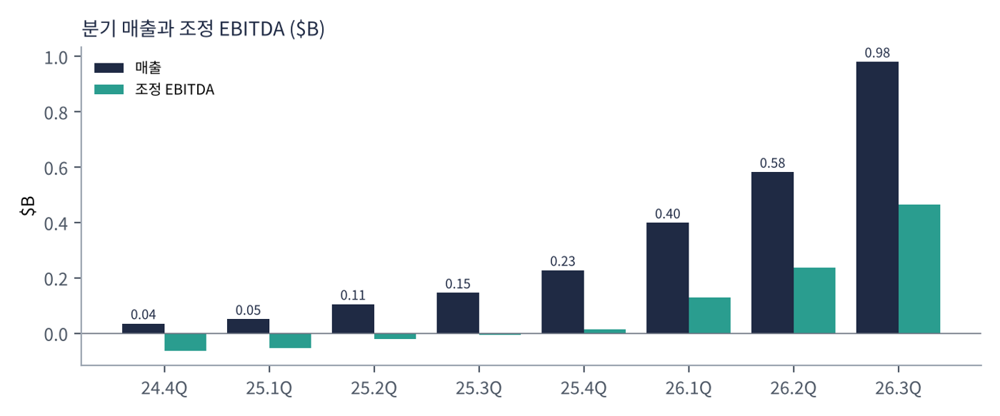
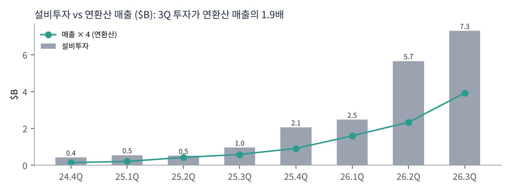
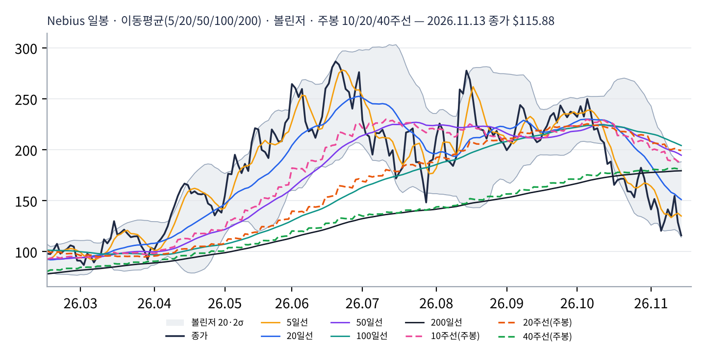
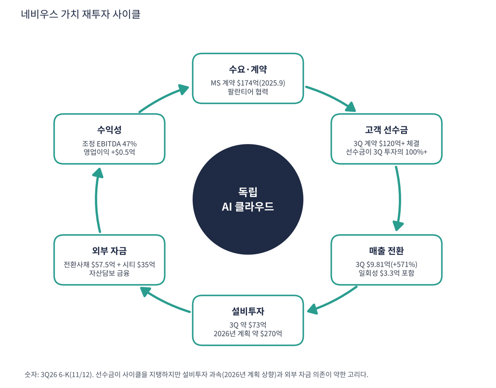

네비우스는 러시아 기술 기업 얀덱스가 2024년 러시아 사업을 매각하고 남은 해외 자산으로 만든 유럽계 AI 클라우드 회사다. 핀란드·네덜란드·미국에 GPU 데이터센터를 짓고 AI 기업에 연산을 빌려주며, 자율주행 아브라이드·교육 트리플텐·클릭하우스 지분도 갖고 있다. 3Q26에 매출이 +571%로 처음 $9.8억을 넘고 영업이익도 처음 흑자가 됐지만, 설비투자 계획이 $270억으로 더 커지며 외부 자금 의존도 함께 커진, 선수금으로 성장을 자금 조달하는 GPU 클라우드다. 3Q 실적을 반영한 판이다.
| 항목 | 내용 |
|---|---|
| 종목 | Nebius Group N.V. (NBIS) · NASDAQ · AI 클라우드 · 본사 네덜란드 암스테르담 (분기 보고서 대신 6-K 주주서한 제출) |
| 밸류에이션 | 발행주식 약 2.384억주 × 11/13 종가 $115.88, 내 계산 · 순손실이라 PER 없음 |
| 최근 분기(3Q26) | 매출 $9.81억(+571%, 전분기 대비 +68%), 조정 EBITDA $4.66억(마진 47%), 영업이익 약 +$0.50억, 순손실 약 -$0.38억(GAAP 주당 -$0.13, 트레이딩뷰 조정 EPS +$0.29) |
| 일회성 매출 | 3Q 매출 중 약 $3.25억은 일회성 자산 경량(asset-light) 매출. 이를 빼면 약 $6.56억(전분기 대비 +13%) |
| 현금·부채 | 현금 $74.3억, 총차입금 약 $159.6억, 자기자본 $123.0억 (현금·차입금·순손익은 트레이딩뷰 스캐너 값으로 회사 표기와 다를 수 있음) |
| 투자 | 3Q 설비투자 약 $73억(주주서한 기준, 스캐너 $64억), 잉여현금흐름 약 -$69.9억(스캐너). 선수금이 3Q 신규 계약 설비투자의 100% 이상 충당했다고 회사가 밝힘 |
| 자금 조달 | 8월 전환사채 $57.5억, ATM 약 $10억, 7월 자산담보 $7.75억, 10월 시티 담보 금융 $35억 |
| 수주·전력 | RPO $387억(전분기 $375억), 3Q 시작 이후 $120억+ 신규 계약, 계약 전력 4GW+(연말 목표 5GW) |
| 다음 실적 | 4Q26 실적: 2027년 2월 예정(확정 아님) |
| 직책 | 인물 | 역할·특징 |
|---|---|---|
| 창업자·CEO | 아르카디 볼로즈 | 얀덱스 공동창업자 출신. B주 의결권 강화로 창업자 지배 구조. 러시아 출신 이미지에 대한 일부 우려가 있다 |
경영 스타일: '고객 선수금과 외부 자금으로 용량을 먼저 깐다'. 2025년 9월 마이크로소프트와 최대 $174억 GPU 공급 계약을 맺은 뒤 설비투자를 분기 $4억대에서 $73억까지 키웠다. 이번 3Q 서한에서 2026년 설비투자 계획을 $200~250억에서 약 $270억으로 올렸고, 2027년은 $400~450억(선수금과 자산담보 금융으로 75~85% 충당 목표)을 제시했다.
| 항목 | 이전 | 3Q26 서한 | 의미 |
|---|---|---|---|
| 2026 매출 | $30~34억 | 하단 $30억 | 3Q 호조에도 연간은 하단. 일회성 매출 포함 |
| 2026 조정 EBITDA 마진 | – | 약 40% | 3Q 47%보다 낮아 4Q 마진 하락 시사 |
| 2026 설비투자 | $200~250억 | 약 $270억 | 상향. 4Q 약 $116억 필요(1~3Q 약 $154억) |
| 연간 ARR 목표 | 12월까지 $7~9B | 2027년 2월 $7B+ | 하향·연기. 회사는 ARR을 더 이상 적절한 지표로 보지 않는다고 밝힘 |
| 2027 매출 / 설비투자 | – | $120~130억 / $400~450억 | 연 1GW+ 신규 용량. 2027년 4Q 세전 손익분기 목표 |
마이크로소프트 뉴저지 용량의 일부가 지연돼 남은 인도분이 2027년 2Q로 밀렸다. 경영진 설명은 서한 기준이며 컨퍼런스콜 발언은 반영하지 못했다.
GPU 인프라 + 학습·추론 소프트웨어 + 데이터 도구를 직접 개발한다(얀덱스 출신 엔지니어 역량). 추론을 토큰 단위로 파는 '토큰 팩토리'와 10월 인퍼라이즈 인수가 추론 시장 확대 축이다.
빅테크 클라우드에 묶이지 않으려는 기업·정부, 그리고 GPU가 모자란 빅테크 자신이 고객이다. 팔란티어가 네비우스를 소버린 AI 인프라 파트너로 지정했다(9월).
다음 실적발표는 세 가지 질문에 답하는 자리다.
1. 매출 전환이 이번 분기에 개선되나?
2. 악재 '설비투자·조달 부담' 부담이 줄어드나?
3. 악재 '일회성·회계 효과' 부담이 줄어드나?
한 줄 판정 규칙: 첫 질문의 매출 전환이 좋아지면 약한 고리가 풀리고, 그렇지 않으면 현재 사이클의 약점이 그대로 남는다.
일정: 다음 발표일은 확인 필요(이번 분기 발표 후 일정 미확정). 위 현재값은 이 보고서의 기존 숫자다.
| 분기 | 매출 | 조정 EBITDA | 영업이익 | 계속영업 순이익 | 설비투자 | EPS | 조정 EPS | 특이 사항 |
|---|---|---|---|---|---|---|---|---|
| 2024.4Q | $0.35억 | -$0.64억 | -$1.37억 | -$1.23억 | $4.2억 | -0.56 | -0.37 | |
| 2025.1Q | $0.51억 | -$0.54억 | -$1.20억 | -$1.04억 | $5.4억 | -0.48 | -0.41 | |
| 2025.2Q | $1.05억 | -$0.21억 | -$1.11억 | $5.03억 | $5.1억 | 2.45 | -0.38 | 지분 평가이익 |
| 2025.3Q | $1.46억 | -$0.05억 | -$1.30억 | -$1.20억 | $9.6억 | -0.47 | -0.41 | MS 계약 |
| 2025.4Q | $2.28억 | $0.15억 | -$2.35억 | -$2.50억 | $20.6억 | -0.99 | -0.99 | EBITDA 흑자 |
| 2026.1Q | $3.99억 | $1.30억 | -$1.28억 | $6.21억 | $24.7억 | 2.01 | -0.32 | 지분 평가이익 $7.8억 |
| 2026.2Q | $5.82억 | $2.36억 | -$1.76억 | -$1.90억 | $56.6억 | -0.68 | -0.12 | 설비투자 급증 |
| 2026.3Q | $9.81억 | $4.66억 | $0.50억 | -$0.38억 | $73.0억 | -0.13 | 0.29 | 일회성 매출 $3.3억 포함, 영업이익 첫 흑자 |
EPS는 희석 GAAP 주당순이익이고, 조정 EPS는 트레이딩뷰 실적 탭의 Reported EPS다. 애널리스트 컨센서스와 같은 기준으로, 회사가 일회성 비용·주식보상·무형자산 상각 등을 제외해 발표한 값이다. 회사가 조정 EPS를 발표하지 않는 종목·분기는 –로 표시했다(2026.11.15 조회).


흐름 요약: 분기 매출이 4분기 만에 $0.35억에서 $9.81억으로 28배가 됐고, 조정 EBITDA 마진은 4Q25 흑자 전환 뒤 두 분기 만에 41%, 이번에 47%가 됐다. 3Q에는 영업이익도 약 $0.50억 흑자가 됐다. 다만 이 분기에는 일회성 자산 경량 매출 약 $3.25억이 들어 있고, 감가상각 내용연수를 5년으로 늘린 영향으로 감가상각이 매출의 45%에서 36%($3.55억)로 낮아졌다. 이를 감안하면 본업의 이익 개선 폭은 헤드라인보다 작다. 설비투자는 여전히 매출을 압도한다. 3Q 설비투자 약 $73억은 연환산 매출($39억)의 1.9배다. 순이익은 클릭하우스 등 지분 평가이익($6~8억)으로 분기마다 크게 흔들렸다.
| 구성 | 돈을 버는 방식 | 비고 |
|---|---|---|
| AI 클라우드 (핵심) | GPU 클러스터 장기 계약(마이크로소프트 등 대형 고객), 셀프서비스 GPU 임대, 추론 플랫폼 '토큰 팩토리'(토큰당 과금) | 3Q 매출 $9.74억, 그룹 매출의 99%. 조정 EBITDA $5.18억(53%) |
| 아브라이드 | 자율주행차·배달 로봇 개발 | 로보택시 250대 운영, 비핵심·손실 |
| 톨로카(Toloka) | AI 데이터 라벨링·평가 서비스 | 3Q 매출이 전분기 대비 2배 |
| 지분 투자 | 클릭하우스 등 비상장 지분 | 평가이익이 순이익을 크게 흔듦 |
'대형 계약 + 개발자 플랫폼'을 동시에 한다. 코어위브가 대형 AI 연구소 중심이라면 네비우스는 대형 계약(마이크로소프트·메타)과 함께 스타트업·개발자가 직접 쓰는 셀프서비스 클라우드와 추론 플랫폼을 키운다. 3Q 원가 구조는 매출 대비 매출원가 22%, 제품 개발 12%, 판관비 24%, 감가상각 36%로 합계 약 95%다(2Q는 130%). 이 중 일회성 매출과 감가상각 기간 연장이 개선의 큰 부분이다.
회사 소개가 목표를 요약한다. 개발자와 기업이 AI의 미래를 직접 책임질 수 있도록 데이터와 모델 학습부터 실제 배포까지 풀스택 플랫폼을 만드는 것이다.
| 축 | 최근 움직임 |
|---|---|
| 풀스택 AI 클라우드 | GPU 인프라 + 학습·추론 소프트웨어 + 데이터 도구를 직접 개발 |
| 소버린 AI | 팔란티어가 소버린 AI 인프라 파트너로 지정(9월). 유럽·미국 정부·기업의 데이터 주권 수요 |
| 용량 확대 | 계약 전력 4GW+, 연말 5GW 목표, 2027년부터 매년 1GW+ 신규 용량 |
| 추론 시장 | 토큰 팩토리, 10월 인퍼라이즈 인수 |
| 자금 조달 다변화 | 전환사채 $57.5억, ATM, 자산담보 금융, 시티 $35억 약정 |

| 이동평균 | 값 | 종가 대비 | 해석 |
|---|---|---|---|
| 5일선 | $134.93 | -14.1% | 실적 후 하락으로 이탈 |
| 20일선 | $151.12 | -23.3% | 10월 급락 후 하향 |
| 50일선 | $194.60 | -40.5% | 가파르게 하락 중 |
| 100일선 | $204.14 | -43.2% | 8~10월 박스 중심 |
| 200일선 | $179.35 | -35.4% | 10월 말 이탈 |
주봉 흐름: 2025년 9월 마이크로소프트 계약으로 $65에서 급등 → 6/22 고점 $300 → 10월 둘째 주부터 4주 만에 $255 → $113(-56%) → 11/6 $129.5 → 11/9주 한때 $160(+24%) 후 반락 → 3Q 실적 직후 11/13 $115.88(-9.9%, 주간 -10.5%). 11/13 종가 기준이며 11/9 주의 고가 $160과 저가 $109의 변동폭이 크다.
| 규칙 | 기준 | 현재 값 | 신호 |
|---|---|---|---|
| 장기 추세 필터 | 종가 vs 200일선 | $115.88 < $179.35 | 매도 |
| 중장기 교차 | 50일선 vs 200일선 | $194.60 > $179.35 | 매수 |
| 단기 교차 | 20일선 vs 50일선 | $151.12 < $194.60 | 매도 |
| 돈키언 채널 | 55일 고가 $255.10 / 저가 $109.00 | 중간값 $182.05 아래 | 매도 |
| 1개월 모멘텀 | 21거래일 수익률 | -38.5% (기준 $188.41) | 매도 |
| 3개월 모멘텀 | 63거래일 수익률 | -56.9% (기준 $268.85) | 매도 |
| 6개월 모멘텀 | 126거래일 수익률 | -47.3% (기준 $219.94) | 매도 |
| 12개월 모멘텀 | 252거래일 수익률 | +22.8% (기준 $94.36) | 매수 |
| 종합 (8개 평균) | -0.50 | 매도 우위 |
해석: 12개월 모멘텀만 매수인데 기준가($94)와는 아직 거리가 있다. 50일선이 200일선 위에 있어 중장기 교차도 매수지만 50일선이 빠르게 내려와 곧 매도로 바뀔 가능성이 크다(50일선 $195, 200일선 $179). 14일 ATR $18.81 (16.2%). 실적 발표일에는 ±10~20% 이상도 가능하다(8월 실적 주 +49%, 이번 -10%).
| 가격 | 무엇이 바뀌나 | 의미 |
|---|---|---|
| $94 이탈 | 12개월 기준가 | 마지막 모멘텀 매수 신호 소멸 |
| $135 ~ 151 | 5일선, 20일선 | 단기 반등 확인 구간 |
| $179 ~ 188 | 200일선, 돈키언 중간값($182), 1개월 기준 | 3개 신호 매수 전환 |
| 구분 | 가격대 | 근거 |
|---|---|---|
| 저항 2 | $179 ~ 190 | 200일선, 1개월 기준가, 돈키언 중간값 |
| 저항 1 | $135 ~ 151 | 5일선, 20일선, 11월 초 갭 |
| 지지 1 | $109 ~ 113 | 11/9주 저가 $109, 11/5 저점 $113 |
| 지지 2 | $74 ~ 94 | 12개월 기준가 $94, 52주 저점 $73.5 |
실적은 숫자상 호조였지만 가이던스(연간 ARR 연기, 설비투자 상향, 마이크로소프트 인도 지연)에 시장이 부정적으로 반응했다. 주가는 11/9주 저가 $109 부근에 와 있어, $109~118에서 지지가 확인될 때 계획 비중의 30%만 진입하고 종가 $104 이탈이면 손절한다(ATR 약 $19라 하루 변동이 큰 점 감안). 목표는 1차 $135(5일선), 2차 $151(20일선). 조건은 선수금 증가 유지, 추가 증자·전환사채 부담 확인, 4Q 설비투자 조달 계획 공개다. 이 종목은 일 변동이 매우 커 포지션을 작게 가져가는 것이 전제다.
| 악재 요인 | 내용 | 강도 |
|---|---|---|
| 설비투자·조달 부담 | 2026 계획 약 $270억, 2027 $400~450억. 차입금 $159.6억, 런웨이 약 0.7~1.6분기(가정별, 외부 자금 제외) | 높음 |
| 일회성·회계 효과 | 3Q 영업이익 흑자는 일회성 매출 $3.25억과 감가상각 연장 영향 포함 | 중간~높음 |
| 고객 집중·인도 지연 | 마이크로소프트 뉴저지 잔여 인도분 2027년 2Q로 이동 | 중간~높음 |
| 희석 | 전환사채·ATM·워런트가 이어짐 | 중간 |
| 경쟁·지배구조 | 코어위브·하이퍼스케일러·오라클·람다 경쟁, B주 의결권 창업자 지배 | 참고 |
| 티커 | 회사 | PER(TTM) | PEG | P/S | EPS 성장(YoY) |
|---|---|---|---|---|---|
| NBIS | 네비우스 | 적자 | – | 12.60배 | – |
| CRWV | 코어위브 | 적자 | – | 3.37배 | – |
| ORCL | 오라클 | 18.8배 | 0.38 | 4.85배 | +48% |
| DELL | 델 | 20.1배 | 0.12 | 1.42배 | +153% |
| MSFT | 마이크로소프트 | 28.5배 | 0.76 | 11.40배 | +36% |
| NVDA | 엔비디아 | 22.6배 | 0.19 | 14.96배 | +125% |
적자는 PER 산출 불가를 뜻한다. 네비우스 외 종목은 11/9 값이라 11/13 가격과 시점이 다르다. 델·엔비디아는 GPU 공급 측, 나머지는 클라우드 수요 측 비교용이다.
비교 결론: 네비우스의 P/S 12.6배는 같은 GPU 클라우드인 코어위브(3.4배)의 약 4배, 오라클(4.7배)의 약 3배다. 11/6의 26배보다는 크게 내려왔지만 이익이 없는 상태에서 2027년 매출 4배 성장이라는 가이던스가 가격의 대부분이다. PER이 있는 마이크로소프트·엔비디아·오라클·델은 20배 안팎이거나 그 아래라서 비교 대상이 되기 어렵다.
네비우스는 선수금이 투자 일부를 대신 내주는 회사지만, 3Q 투자액이 현금 잔고와 비슷한 규모다. 현금 $74.3억에 10월 시티 담보 금융 $35억이 더해진다. '런웨이'(현금이 버틸 수 있는 기간)는 가정별로 계산했다.
| 지표 | 값 | 계산·출처 | 해석 |
|---|---|---|---|
| 현금 | $74.3억 | 3Q26 (스캐너) | 2Q $80.4억에서 소폭 감소. 3Q에 전환사채 $57.5억 등을 조달하고도 줄었다 |
| 총차입금 | $159.6억 | 3Q26 (스캐너) | 2Q $85.5억에서 약 2배. 순차입금 $85.3억 |
| 잉여현금흐름 (3Q) | 약 -$69.9억 | 스캐너 영업현금과 설비투자 | 회사 표기와 다를 수 있음 |
| 설비투자 (3Q) | 약 $73억 | 주주서한 | 연환산 매출의 1.9배 |
| 자기자본 / 차입금 비율 | $123.0억 / 약 1.3배 | 차입금 ÷ 자기자본 | 2Q 0.8배($85.5억 ÷ $103.4억)에서 상승 |
| 가정 | 분기 순소진 | 런웨이 (현금 $74.3억) | 시티 $35억 포함 ($109.3억) |
|---|---|---|---|
| 3Q 소진 속도 유지 | -$69.9억 | 약 1.1분기 | 약 1.6분기 |
| 4Q 설비투자 $116억 (연간 $270억 가이던스) 가정, 영업현금 3Q 수준 | 약 -$113억 | 약 0.7분기 | 약 1.0분기 |
외부 자금 없이 보유 현금만으로 충당한다는 단순 계산이며 내 가정이다. 실제로는 2027년 선수금 $170~200억과 자산담보 금융으로 설비투자의 75~85%를 충당한다는 계획이어서 이 기간보다 길어질 수 있다. 반대로 조달이 막히면 4Q에 바로 부담이 된다.
| 기준 | 매출 | P/S | 비고 |
|---|---|---|---|
| TTM 4분기 합 | $21.90억 | 12.6배 | 매출 $21.90억 |
| 3Q 연환산 | $39.2억 | 7.0배 | $9.81억 × 4 (일회성 포함) |
| 3Q 연환산, 일회성 제외 | $26.2억 | 10.5배 | ($9.81억 − $3.25억) × 4 |
| 2026 가이던스 하단 | $30억 | 9.2배 | 회사 가이던스 |
| 2027 가이던스 | $120~130억 | 2.1~2.3배 | 회사 가이던스, 달성 전제 |
| 동종 | – | – | 코어위브 3.4, 오라클 4.7, 델 1.4 (11/9 스캐너) |
해석: TTM P/S는 12.6배로 11/6의 26배에서 절반으로 내려왔다. 매출이 커졌고 주가가 내렸기 때문이다. 다만 2026 가이던스 하단 기준 9.2배, 일회성을 뺀 3Q 연환산 기준 10.5배로 여전히 코어위브(3.4배)의 약 3배다. 스트레스 가정(2026 하단 매출 $30억 기준): P/S 6배면 약 $75 (-35%), 9배면 약 $113 (-2%), 12배면 약 $151 (+30%)이다(모두 내 가정).
| 지표 | 값 | 판정 |
|---|---|---|
| 조정 EBITDA (3Q) | $4.66억 (47%) | 흑자 |
| 조정 EBITDA (TTM) | $8.47억 | 4Q25 $0.15억 + 1Q $1.30억 + 2Q $2.36억 + 3Q $4.66억 |
| 영업이익 (3Q) | 약 +$0.50억 | 첫 흑자 일회성 매출·감가상각 내용연수 연장 효과 포함 |
| EV / EBITDA | TTM 42.6배, 3Q 연환산 19.4배 | EV(차입금 $159.6억 − 현금 $74.3억 반영) |
| 순부채 / 연환산 EBITDA | 약 4.6배 | 순부채 $85.3억 ÷ $18.6억. 2Q 약 0.5배에서 급등 |
조정 EBITDA는 감가상각을 빼기 때문에 영업이익과 차이가 크다. 3Q 영업이익 흑자는 일회성 매출($3.25억)이 포함되고 감가상각 기간이 늘어난 결과여서 반복 가능한 이익으로 보기 어렵다. 차입금이 두 배가 되며 순부채/EBITDA가 0.5배에서 4.6배로 뛴 점이 가장 큰 변화다.
| 방식 | PER | EPS 성장률 | PEG | 판정 |
|---|---|---|---|---|
| 트레이딩뷰 (TTM) | 산출 불가 | – | 산출 불가 | GAAP 순손실 (3Q 주당 -$0.13) |
| 조정 EPS 기준 | 산출 불가 | – | 산출 불가 | 3Q 조정 EPS +$0.29로 흑자 전환했으나 TTM 합 -$1.14로 아직 적자 |
| PER 30배가 되려면 필요한 순이익 | 30배 | – | – | 매출 30 = $9.2억 (3Q 순손실 -$0.38억에서 약 $9.6억 개선 필요) |
| EV/EBITDA 기반 성장 대비 배수 (내 가정) | 42.6배 (TTM EV/EBITDA) | EBITDA 연 +100% 가정 | 약 0.4 | 적극 매수 |
| 같은 방식, EBITDA 성장 +50% 가정 | 42.6배 | +50% | 약 0.9 | 투자 적격 |
| 같은 방식, EBITDA 성장 +25% 가정 | 42.6배 | +25% | 약 1.7 | 기준 초과 |
판정: GAAP PEG는 산출 불가. 순이익이 적자라 PER이 없다. 참고용으로 EV/EBITDA를 EBITDA 성장률로 나눈 값을 계산했는데, 성장이 100%면 0.4, 50%면 0.9, 25%면 1.7로 성장률 가정에 따라 판정이 뒤집힌다. 이는 PEG의 변형이며 성장률 가정은 내 가정이다. 회사 가이던스상 2027년 매출은 2026년의 약 4배($120~130억)이고 세전 손익분기는 2027년 4Q여서, 이익 기반 지표는 최소 4분기 뒤에나 의미가 생긴다. 핵심은 선수금이 계속 들어오는지, 외부 자금이 계속 열려 있는지다.

네비우스의 사이클은 고객 선수금이 설비투자를 일부 대신 지급하는 구조다. 수요가 강해 고객이 먼저 돈을 내고, 그 돈과 외부 자금으로 GPU를 늘리고, 늘어난 용량이 다시 매출이 된다. 3Q에는 신규 계약 $120억+가 이어졌지만 설비투자 계획이 더 커졌고 차입금이 두 배가 됐다.
| 고리 | 현재 숫자 | 고리 강도 | 약해지는 신호 |
|---|---|---|---|
| ① 수요·계약 | RPO $387억, 3Q 시작 후 $120억+ 신규 계약, 계약 전력 4GW+ | 강함 | 신규 계약 둔화, 고객 집중, 마이크로소프트 인도 지연 |
| ② 선수금 | 선수금이 3Q 신규 계약 설비투자의 100%+ 충당(회사), 2026 목표 $100억 | 강함 | 선수금 증가 중단 |
| ③ 매출 전환 | 3Q 매출 $9.81억(+571%), 일회성 $3.25억 포함 | 질 점검 | 일회성 제외 성장 +13%로 둔화 |
| ④ 설비투자 | 3Q 약 $73억, 2026 계획 약 $270억, 2027 $400~450억 | 과속 | 가동 지연, 감가상각 부담 |
| ⑤ 외부 자금 | 차입금 $85.5억 → $159.6억, 시티 $35억 | 의존 심화 | 신용 우려로 조달 비용 상승, 희석 |
| ⑥ 수익성 | 조정 EBITDA 47%, 영업이익 +$0.5억(일회성 포함) | 개선 중 | 일회성 소멸, 4Q 마진 가이던스 40% |
구조: 강한 고리는 ①·②, 약한 고리는 ④·⑤이다. 선수금이 계속 늘어나는 한 사이클은 유지되지만, 설비투자 계획이 커지는 만큼 외부 자금이 막히면 바로 부담이 된다. 2Q와 달리 이제는 순부채가 EBITDA의 4.6배라 조달 조건이 중요해졌다.